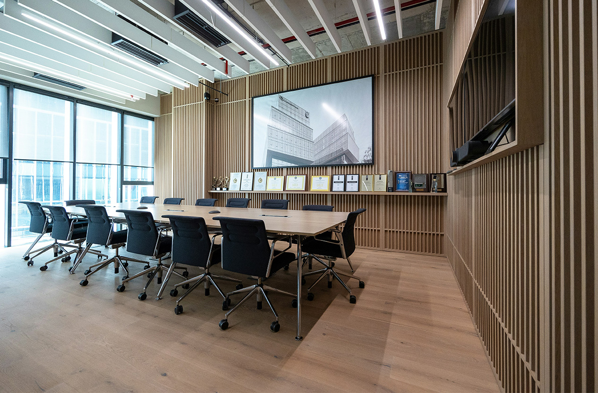

Corporate AV
Regional headquarters boardroom refresh
Rebuilt a dated executive room into a reliable hybrid meeting environment with simplified source control, room presets, and clearer operator feedback.
12-seat executive room
One-touch launch modes
Remote support ready
Challenge
Meeting starts were inconsistent because routing, audio, and display actions depended on technical operators.
Solution
NEXXTAV restructured the Crestron interface around room presets, clearer feedback states, and simplified source selection.
Result
Executives gained a faster start-up flow, facilities teams reduced support intervention, and hybrid meetings ran more reliably.
Scope: Crestron touch panel redesign, DSP coordination, display switching
Outcome: Faster meeting starts and reduced support calls